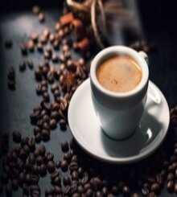
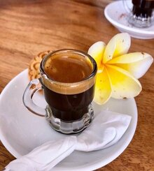
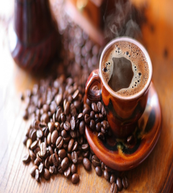
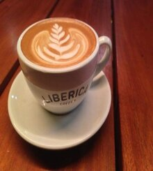
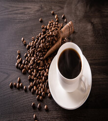
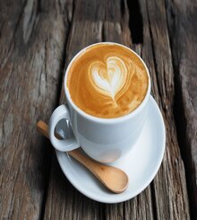

Products
-
What is Espresso
Espresso coffee is a small 1 to 2 oz. shot of pressure-brewed coffee using between 6.5 and 7.5 grams (about 1 Tablespoon) of finely ground coffee. Brewing takes about 25 to 30 seconds.
-

Espresso
-
Cappuccino
-

Ristretto
-
What is Americano
Americano coffee is the simple addition of hot water ON TOP of a shot of espresso. Adding the water on top mixes the espresso shot and dissipates the upper layer and crema. The resulting drink is less strong and more balanced.
-

Americano
-

Doppio
-

Liberica
-
What is Robusta
Robusta originated in central and western sub-Saharan Africa. It is the second most popular coffee in the world, making up 40% of the worlds coffee production. It comes second only to arabica (from the Coffea arabica plant) which makes up the remaining 60% (or more) of coffee production worldwide. Learn more about arabica coffee.
-

Robusta
-

Black coffee
-

Latte